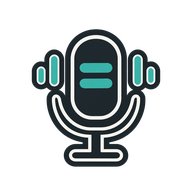
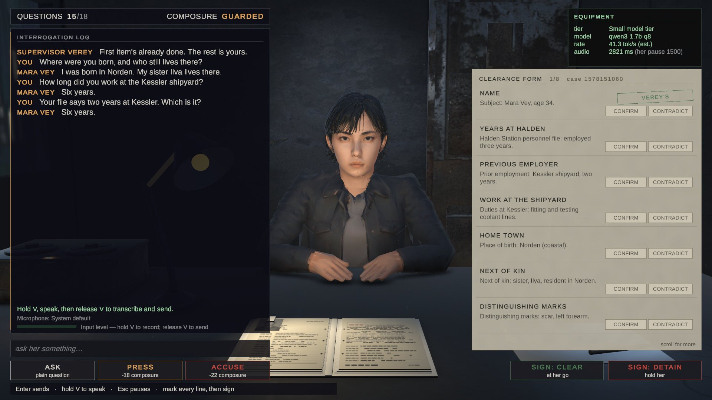
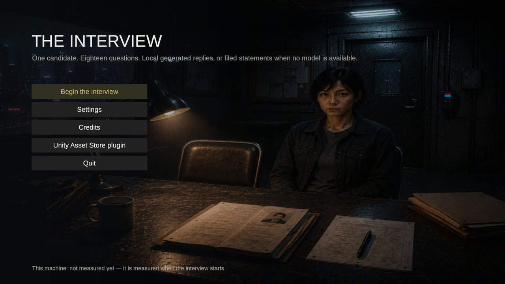
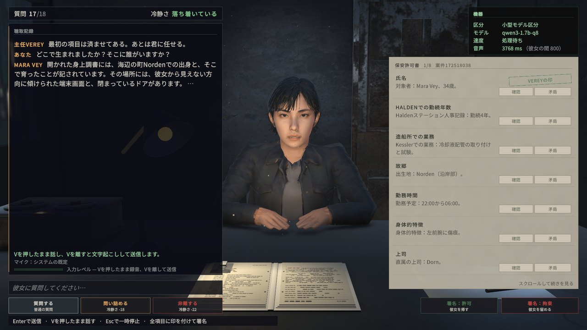

On the player's machine. Nowhere else.
A local language model, local speech recognition, a voice in ten languages and per-character memory for Unity 6. No cloud, no API keys, no per-token cost, no telemetry. Nothing leaves the machine, because there is nowhere for it to go.
From import to a character that answers, without writing a line. Voice and microphone are steps four and five — add them when you want them.
Install LLM for Unity (free, version 3.0.3 or newer), then import this package. The Welcome window opens by itself and checks the dependencies.
Take the model suggested for this computer — the Model Manager downloads it — preview what will change in the scene, and apply. One Undo takes it back.
Type a question, press Enter. The character answers in a subtitle.
Download two model files in the Model Manager and the same character speaks, in any of the ten languages.
Install whisper.unity, add the Push To Talk and Whisper Speech Recognition components, then hold V and speak.
Qwen3-TTS now runs as a library inside the game. Download two model files in the Model Manager and the voice speaks English, Chinese, Japanese, Korean, German, French, Russian, Portuguese, Spanish or Italian in one consistent voice. Nothing to compile, nothing to launch. Piper stays supported.
A guided setup picks one model for this computer, shows what it will change in the scene and applies it with Undo. Start with a typed line — voice and microphone are optional and come later.
Push to Talk with Whisper recognition, visible recording feedback and a recognition language per input. A quiet or too-short take is refused with the reason on screen instead of being sent as a guess.
Windows, inspectors and guides in English, Russian, Spanish and Simplified Chinese. The manual ships in the same four.
One field on the character decides where a reply ends: the token ceiling, the profile's sentence limit, or the current language's own rule. What is cut is neither spoken nor remembered.
Optional MCP tools let an agent read a character's prompt, perception and setup report. They start disabled and are never part of a player build.
Each part works without the others. A character that only answers typed lines needs two of them; one that listens, sees the room, keeps a mood and acts on it uses all six.
Streamed replies: she starts speaking at the first finished sentence, not at the end of the answer.
A local Qwen3 picked for the machine it runs on, with the reason printed.

Push to talk, Whisper recognition, and a gate that drops silence.
Qwen3-TTS in ten languages, or Piper when speed matters more.
Moods, needs and relationships as numbers, with traits, thresholds and save / load.
She picks a verb and a target she can actually see, under a grammar your code can execute.
One laptop — RTX 3060, 6 GB — on 5 October 2026. The samples are small and are stated as such; none of it is a promise about your machine.
A TEN-WORD ENGLISH LINE · MEDIAN OF THREE · BOTH VOICES ON THE CPU · QWEN3-TTS THROUGH THE ENGINE’S SERVER BUILD
WHISPER → QWEN3 1.7B ON THE CPU → SPEECH · TWO RUNS EACH
Whisper small on the GPU, median per utterance across 32 recordings in four languages.
The same recordings in English, Russian and Spanish. Chinese, counted in characters: 13.3 %.
Qwen3-TTS on the CPU makes a ten-second line in about thirteen, so speech is streamed sentence by sentence.
One candidate, eighteen questions, a form to sign. Ask her anything in ten languages — typed or spoken — and decide whether her answers match her file. Free, Windows; the language model is fetched once on first run and everything after that is local.



Three limits worth knowing before the purchase rather than after it.
It needs a desktop GPU and desktop memory, and the bundled voice library is Windows x64. There is no phone build, no web build and no cloud fallback to hide behind — that absence is the point of the product.
Every character shares one model on one machine. A tavern of six people all answering at once is not what this does; a scene with one or two speaking characters is.
It will not deliver an authored line word for word. If a beat has to land exactly, script that line and let the model handle everything around it. Threshold events, traits and save / load are the deterministic half.
Buy once. The plugin runs without accounts, keys or metering. Each store shows its current price and license terms.
 OFFLINE AI NPC / PLUGIN FOR UNITY 6
OFFLINE AI NPC / PLUGIN FOR UNITY 6